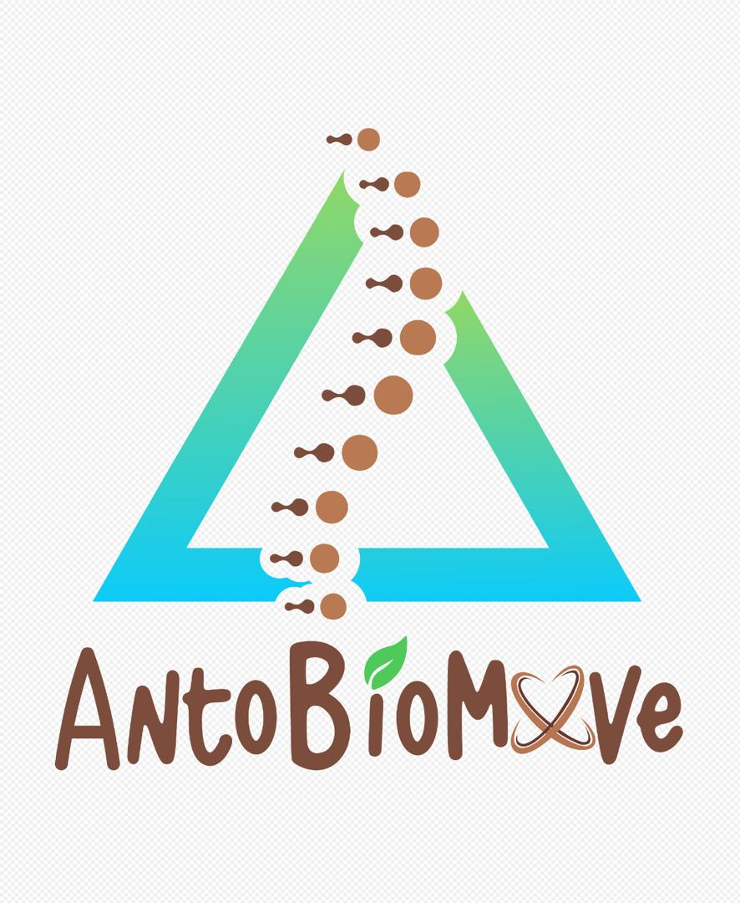

Stories para Instagram — Lunes a Viernes
Paso 1: Haz captura de pantalla de la story
Paso 2: Recórtala para que solo se vea la imagen
Paso 3: Súbela como Story en Instagram
Paso 4: Lee la cajita de instrucciones que aparece ARRIBA de cada story (esa parte NO la capturas)
Las cajitas verdes con instrucciones son SOLO para ti — no aparecen en la captura
Lunes — Story 1: Encuesta
DESPUÉS de subir esta story a Instagram:
1. Toca el ícono de stickers (carita cuadrada arriba)
2. Busca "Encuesta"
3. Escribe la pregunta: ¿Qué es el Power House en Pilates?
4. Escribe las opciones:
Opción 1: Técnica de respiración
Opción 2: Centro de fuerza ← esta es la CORRECTA
5. Colócalo sobre la story y listo

Encuesta
¿Qué es el POWER HOUSE en Pilates?
¿Tú lo sabes? Responde arriba 👆
@anto_biomove
Lunes
Lunes — Story 2: Respuesta
Respuesta
El Power House es tu CENTRO de fuerza
Transverso abdominal, oblicuos, suelo pélvico y diafragma.
Todo en Pilates parte de aquí.
Este viernes lo explicamos a fondo en nuestro seminario de Biomecánica
Escríbeme al DM para info
@anto_biomove
Martes — Story 1: Encuesta
DESPUÉS de subir esta story a Instagram:
1. Toca el ícono de stickers (carita cuadrada arriba)
2. Busca "Encuesta"
3. Escribe una opción: 206
4. Escribe la otra opción: 360 ← esta es la correcta
5. Colócalo sobre la story y listo
Encuesta
¿Cuántas articulaciones crees que tiene tu cuerpo?
¿Cuál crees que es? Vota arriba 👆
@anto_biomove
Martes
Martes — Story 2: Respuesta
Respuesta
360
articulaciones
86 solo en el cráneo. Las articulaciones sinoviales son las que más usamos en Pilates.
Permiten 6 tipos de movimiento
¿Quieres saber cuáles? Este viernes en el seminario de Biomecánica y Anatomía
Escríbeme al DM
@anto_biomove
Miércoles — Dato + Link al Quiz
DESPUÉS de subir esta story a Instagram:
1. Toca el ícono de stickers → busca "Link"
2. Pega este link del quiz:
infoantonellagutierrez-lang.github.io/TF-app-claudecode/miniserie-pilates/quiz_presentacion.html
3. Colócalo sobre la story
¿Sabías que...?
Joseph Pilates NO le llamaba "Pilates" a su método
CONTROLOGÍA
El arte de controlar el cuerpo con la mente.
El nombre "Pilates" llegó después de su muerte en 1967.
¿Quieres poner a prueba tus conocimientos?
Haz el quiz online 👆 (link en el sticker)
@anto_biomove
Miércoles
Jueves — Countdown
DESPUÉS de subir esta story a Instagram:
1. Toca el ícono de stickers → busca "Cuenta regresiva"
2. Ponle de nombre: Seminario Biomecánica
3. Pon la fecha: viernes 30 de octubre
4. Colócalo sobre la story
Mañana
MAÑANA es el día
Seminario:
Biomecánica y Anatomía en el Pilates
Acreditado por el Prof. Carlos Alberto Zorrilla
Centro Zen Pilates (PMA / IIDCA)
Quedan los últimos cupos
Escríbeme AHORA para reservar
@anto_biomove
Jueves
Viernes — Día D
DESPUÉS de subir esta story a Instagram:
1. Toca el ícono de stickers → busca "Ubicación"
2. Pon la dirección del lugar donde es el seminario
3. También puedes agregar tu propia foto preparando todo
Hoy
HOY NOS VEMOS
Preparando todo para nuestro seminario de Biomecánica y Anatomía en el Pilates
Gracias a todos los que confiaron en esta formación.
Hoy aprendemos juntos
Comparte tu foto del día
@anto_biomove
Viernes 30